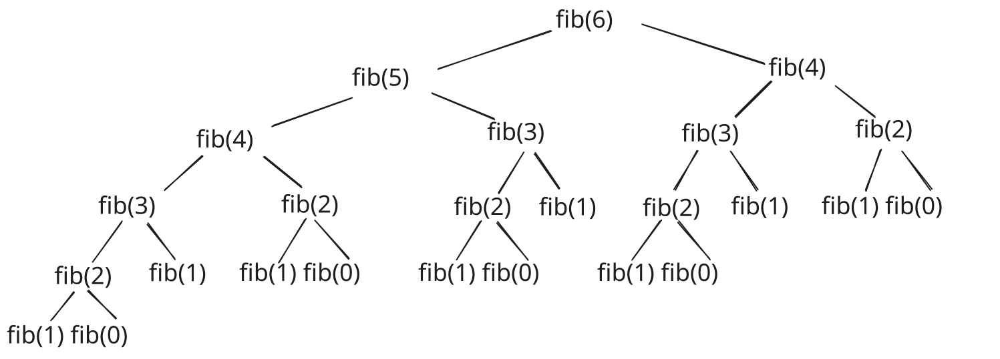
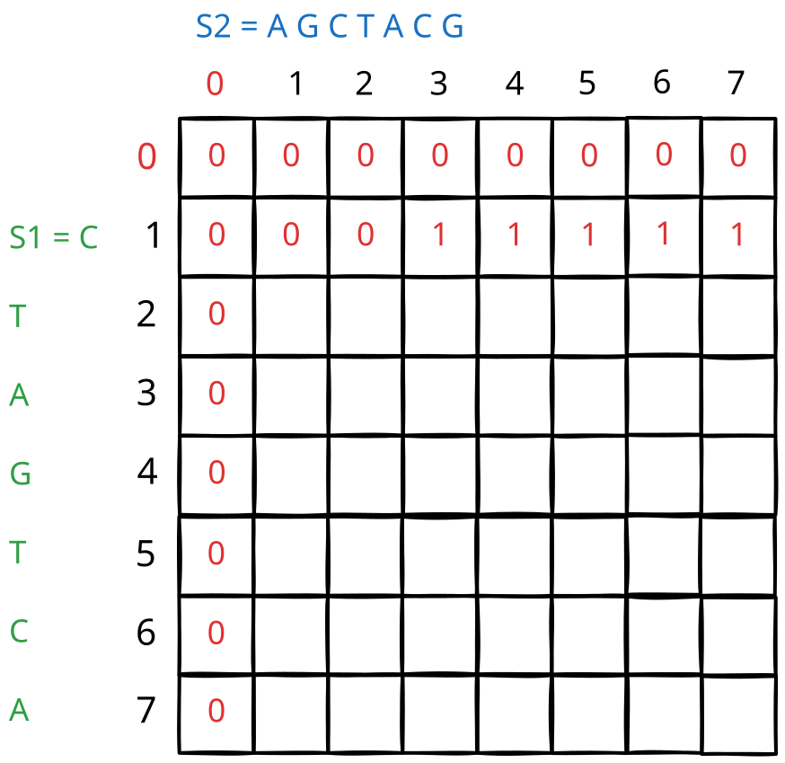
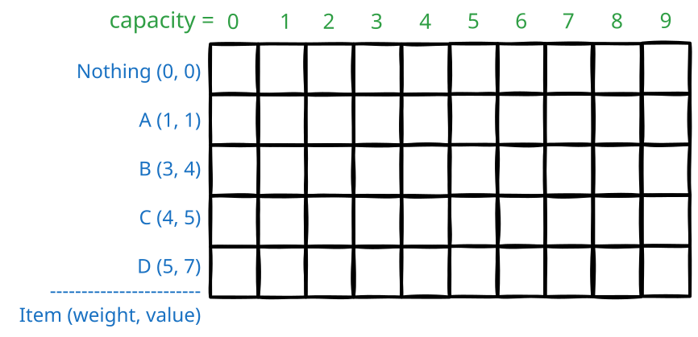

Dynamic Programming (DP) is a technique for solving problems by:
DP is NOT:
DP IS:
One-liner: “Remember what you’ve already solved.”
Every DP problem requires exactly two things:
1. Optimal Substructure
The optimal solution to the problem contains optimal solutions to its subproblems.
“I can build the best answer from the best answers to smaller versions.”
2. Overlapping Subproblems
The same subproblems appear again and again during recursion.
“I keep solving the same smaller problems repeatedly — let me cache them.”
If both conditions hold → DP will help you.
| Divide & Conquer | Dynamic Programming | |
|---|---|---|
| Subproblems | Independent | Overlapping |
| Reuse results? | No (not needed) | Yes (essential) |
| Examples | Merge Sort, Binary Search | Fibonacci, Knapsack |
| Overhead | Recursion only | Recursion + memory |
Merge Sort splits [1..n] into [1..n/2] and [n/2+1..n]. Those halves never overlap.
Fibonacci needs fib(4) to compute both fib(5) and fib(6). They do overlap.
\[F(n) = F(n-1) + F(n-2), \quad F(0)=0,\ F(1)=1\]
Simple and correct. But let’s trace fib(6):

Time complexity: O(2ⁿ) — doubles with every step. Terrible!
The call tree for fib(6) has 25 nodes, even though there are only 7 distinct subproblems (fib(0)…fib(6)).
fib(6) call tree
fib(3) alone is called 3 times, fib(2) is called 5 times.
This is the overlapping subproblems problem.
The fix? Store results the first time. Memoisation.
Add a cache. If we’ve seen it before, return the stored answer.
Now fib(5) only ever computes each value once:
fib(5) → fib(4) → fib(3) → fib(2) → fib(1) = 1
→ fib(0) = 0
→ fib(1) = 1 [cached: skip]
→ fib(2) = 1 [cached: skip]
→ fib(3) = 2 [cached: skip]Time: O(n) — Space: O(n)
Instead of recursing top-down, fill a table from the base cases upward.
| i | 0 | 1 | 2 | 3 | 4 | 5 | 6 | 7 |
|---|---|---|---|---|---|---|---|---|
| dp[i] | 0 | 1 | 1 | 2 | 3 | 5 | 8 | 13 |
Time: O(n) — Space: O(n) (can reduce to O(1) with two variables)
| Top-Down (Memoisation) | Bottom-Up (Tabulation) | |
|---|---|---|
| Style | Recursive + cache | Iterative + table |
| Order | Lazy (computed on demand) | Explicit (fill in order) |
| Easier to | Write (mirrors recurrence) | Optimise (no call stack) |
| Risk | Stack overflow for large n | Need to figure out fill order |
| Use when | Not all subproblems needed | All subproblems needed |
Both give the same asymptotic complexity.
Start with top-down (it’s easier), then convert to bottom-up if needed.
You’re climbing a staircase with n steps.
Each move you can climb 1 or 2 steps.
How many distinct ways can you reach the top?
Examples:
[1] → 1 way[1+1], [2] → 2 ways[1+1+1], [1+2], [2+1] → 3 ways[1+1+1+1], [1+1+2], [1+2+1], [2+1+1], [2+2] → 5 waysNotice anything?
1, 2, 3, 5, 8, 13, ... — it’s Fibonacci!
Key insight: to reach step n, you came from either:
n-1 (took a 1-step), orn-2 (took a 2-step)So: ways(n) = ways(n-1) + ways(n-2)
This problem teaches the core DP pattern: define dp[i] = answer for subproblem of size i, build up from base cases.
You have coins of denominations
[1, 5, 6, 9].
What is the minimum number of coins to make amountn = 11?
Greedy fails here! Greedy picks 9 first → 9 + 1 + 1 = 3 coins.
But optimal is 5 + 6 = 2 coins. ✓
Why DP? To make amount n, we can use any coin c, and then we need to make n - c with minimum coins. The subproblems overlap heavily.
Let dp[i] = minimum coins needed to make amount i.
Recurrence: \[dp[i] = 1 + \min_{c \in \text{coins}} dp[i - c] \quad \text{for } i \geq c\]
Base case: dp[0] = 0 (zero coins needed to make 0)
Intuition: for each amount, try every coin and take the best option.
Coins = [1, 5, 6, 9], target = 11
| Amount | 0 | 1 | 2 | 3 | 4 | 5 | 6 | 7 | 8 | 9 | 10 | 11 |
|---|---|---|---|---|---|---|---|---|---|---|---|---|
| dp | 0 | 1 | 2 | 3 | 4 | 1 | 1 | 2 | 2 | 1 | 2 | 2 |
For dp[11]:
dp[10] + 1 = 3dp[6] + 1 = 2 ✓dp[5] + 1 = 2 ✓dp[2] + 1 = 3Answer: 2 coins (e.g. 5 + 6)
def coin_change(coins, amount):
INF = float('inf')
dp = [INF] * (amount + 1)
dp[0] = 0 # base case
for i in range(1, amount + 1):
for coin in coins:
if coin <= i and dp[i - coin] != INF:
dp[i] = min(dp[i], dp[i - coin] + 1)
return dp[amount] if dp[amount] != INF else -1
print(coin_change([1, 5, 6, 9], 11)) # → 2
print(coin_change([2], 3)) # → -1 (impossible)Time: O(amount × |coins|)
Space: O(amount)
Given two strings, find the length of their longest common subsequence.
A subsequence keeps characters in order but skips some.
Example:
s1 = "ABCBDAB"
s2 = "BDCABA"
LCS = "BCBA" (length 4)B_C_B_A appears in both strings (in order, not necessarily contiguous).
Applications: diff tools (git diff!), DNA sequence alignment, spell checking.
Define dp[i][j] = LCS length of s1[0..i-1] and s2[0..j-1].
Recurrence:
\(dp[i][j] = \begin{cases} dp[i-1][j-1] + 1 & \text{if } s1[i-1] = s2[j-1] \\ \max(dp[i-1][j],\ dp[i][j-1]) & \text{otherwise} \end{cases}\)
Intuition:
Base cases: dp[0][j] = 0, dp[i][0] = 0 (empty string has no common subsequence)
\(dp[i][j] = \begin{cases} dp[i-1][j-1] + 1 & \text{if } s1[i-1] = s2[j-1] \\ \max(dp[i-1][j],\ dp[i][j-1]) & \text{otherwise} \end{cases}\)
Sequence 1: C T A G T C A Sequence 2: A G C T A C G
dp[0][j] = 0, dp[i][0] = 0
def lcs(s1, s2):
m, n = len(s1), len(s2)
dp = [[0] * (n + 1) for _ in range(m + 1)]
for i in range(1, m + 1):
for j in range(1, n + 1):
if s1[i-1] == s2[j-1]:
dp[i][j] = dp[i-1][j-1] + 1 # characters match!
else:
dp[i][j] = max(dp[i-1][j], dp[i][j-1]) # take the best
return dp[m][n]
print(lcs("ABCBDAB", "BDCABA")) # → 4
print(lcs("AGGTAB", "GXTXAYB")) # → 4Time: O(m × n)
Space: O(m × n) (reducible to O(min(m,n)) with a rolling array)
You have a knapsack with capacity W.
There arenitems, each with a weight and a value.
Maximise total value without exceeding capacity.
Each item is either taken (1) or left (0).
Example: capacity W = 7
| Item | Weight | Value |
|---|---|---|
| A | 1 | 1 |
| B | 3 | 4 |
| C | 4 | 5 |
| D | 5 | 7 |
Best choice: B + C = weight 7, value 9 ✓
Define dp[i][w] = max value using the first i items with capacity w.
For each item i, two choices:
\[ dp[i][w] = \begin{cases} dp[i-1][w] & \text{skip item } i \\ dp[i-1][w - wt_i] + val_i & \text{take item } i \quad (\text{if } wt_i \leq w) \end{cases} \]
Take the maximum of the two options.
Base case: dp[0][w] = 0 for all w (no items → no value)
\[ dp[i][w] = \begin{cases} dp[i-1][w] & \text{skip item } i \\ dp[i-1][w - wt_i] + val_i & \text{take item } i \quad (\text{if } wt_i \leq w) \end{cases} \]
| Item | Weight | Value |
|---|---|---|
| A | 1 | 1 |
| B | 3 | 4 |
| C | 4 | 5 |
| D | 5 | 7 |
Capacity = 7

def knapsack(weights, values, W):
n = len(weights)
dp = [[0] * (W + 1) for _ in range(n + 1)]
for i in range(1, n + 1):
wt, val = weights[i-1], values[i-1]
for w in range(W + 1):
# Option 1: skip item i
dp[i][w] = dp[i-1][w]
# Option 2: take item i (if it fits)
if wt <= w:
dp[i][w] = max(dp[i][w], dp[i-1][w - wt] + val)
return dp[n][W]
weights = [1, 3, 4, 5]
values = [1, 4, 5, 7]
print(knapsack(weights, values, 7)) # → 9Time: O(n × W) — Space: O(n × W)
When you see a new problem, ask these questions in order:
Can I define the problem recursively?
→ “What smaller versions of this problem do I need?”
Do subproblems overlap?
→ Draw the recursion tree. Are the same calls repeated?
What is my dp[...] state?
→ What information fully describes a subproblem?
What is the recurrence?
→ How does dp[i] (or dp[i][j]) depend on smaller states?
What are the base cases?
→ What are the smallest subproblems I can answer directly?
In what order should I fill the table?
→ Each cell must be computed after the cells it depends on.
The state is the hardest part. It must capture everything you need to solve a subproblem — no more, no less.
| Problem | State | Meaning |
|---|---|---|
| Fibonacci | dp[i] |
F(i) |
| Climbing Stairs | dp[i] |
ways to reach step i |
| Coin Change | dp[i] |
min coins for amount i |
| LCS | dp[i][j] |
LCS of s1[0..i-1] and s2[0..j-1] |
| Knapsack | dp[i][w] |
max value using first i items, capacity w |
Rule of thumb: if the problem has one “variable dimension” → 1D table.
If it has two → 2D table. Three → 3D. (Rare beyond 3D.)
| Pattern | Signature | Examples |
|---|---|---|
| Linear | dp[i] depends on dp[i-1], dp[i-2] |
Fibonacci, Stairs, Max Subarray |
| Prefix | dp[i] = best answer for first i elements |
Coin Change, Jump Game |
| Interval | dp[i][j] = answer for subarray [i..j] |
Matrix Chain, Burst Balloons |
| Two-sequence | dp[i][j] = answer for s1[0..i], s2[0..j] |
LCS, Edit Distance |
| Knapsack | dp[i][w] = best using i items, budget w |
0/1 Knapsack, Subset Sum |
Recognising the pattern is half the battle.
| Problem | Dimensions | Recurrence idea | Complexity |
|---|---|---|---|
| Fibonacci | 1D | dp[i] = dp[i-1] + dp[i-2] |
O(n) time |
| Coin Change | 1D | dp[i] = 1 + min(dp[i-c]) |
O(n·k) time |
| LCS | 2D | match → extend; mismatch → max of skip | O(mn) time |
| Knapsack | 2D | skip or take each item | O(nW) time |
(Connecting to last class!)
| Backtracking | Dynamic Programming | |
|---|---|---|
| Goal | Find a solution / all solutions | Find the optimal solution |
| Subproblems | Independent (tree structure) | Overlapping |
| Saves work via | Pruning | Memoisation |
| Output | Solution(s) | Value / count |
| Complexity | Exponential (but pruned) | Polynomial |
In practice: if you find yourself doing backtracking and the subproblems repeat → add memoisation → you’ve discovered DP!
What DP gives you:
What you need to practice:
“DP is just recursion that remembers its past.”